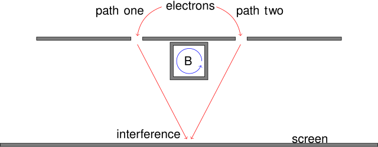

The Aharonov-Bohm Effect#
The Aharonov-Bohm (AB) effect demonstrates that electromagnetic potentials, rather than just fields, play a fundamental role in quantum mechanics. It reveals that even in regions where the electromagnetic field strength is zero, the potentials can influence the phase of a particle’s wavefunction, leading to observable physical consequences.
Historical Context#
Proposed by Yakir Aharonov and David Bohm in 1959.
Challenged the classical notion that only electric and magnetic fields have physical significance.
Experimentally confirmed in the 1960s.
Key Concepts#
Electromagnetic Potentials in Quantum Mechanics#
In classical electromagnetism:
The electric field \( \mathbf{E} \) and magnetic field \( \mathbf{B} \) are derived from the scalar potential \( \phi \) and the vector potential \( \mathbf{A} \):
\[\mathbf{E} = -\nabla \phi - \frac{\partial \mathbf{A}}{\partial t}, \quad \mathbf{B} = \nabla \times \mathbf{A}.\]
In quantum mechanics:
The potentials \( \phi \) and \( \mathbf{A} \) are more fundamental because they appear directly in the Schrödinger equation through the Hamiltonian.
Gauge Invariance#
Electromagnetic potentials are not unique; they can be transformed without changing the physical observables. This property is known as gauge invariance. The transformations are given by:
Gauge Transformations:
The scalar potential \( \phi \) and vector potential \( \mathbf{A} \) can be redefined as:
\[\mathbf{A}' = \mathbf{A} + \nabla \chi, \quad \phi' = \phi - \frac{\partial \chi}{\partial t},\]where \( \chi \) is an arbitrary scalar function.
Wavefunction Transformation:
Under a gauge transformation, the wavefunction \( \psi \) transforms as:
\[\psi' = \psi \exp\left(\frac{ie}{\hbar} \chi\right),\]ensuring that the Schrödinger equation remains invariant.
Physical Observables:
The fields \( \mathbf{E} \) and \( \mathbf{B} \) are unchanged by these transformations:
\[\mathbf{E}' = \mathbf{E}, \quad \mathbf{B}' = \mathbf{B}.\]
The Aharonov-Bohm effect demonstrates that even when \( \mathbf{E} = 0 \) and \( \mathbf{B} = 0 \) in a region, the potentials \( \phi \) and \( \mathbf{A} \) can influence the quantum phase of a particle.
The Experiment#

Schematic of double-slit experiment in which the Aharonov–Bohm effect can be observed: electrons pass through two slits, interfering at an observation screen, with the interference pattern shifted when a magnetic field \(\bf B\) is changed in the whisker. The direction of the \(\bf B\) field is outward from the figure; the inward returning flux is not shown, but is outside the electron paths. The arrow shows the direction of the \(\bf A\) field which extends outside the boxed region even though the \(\bf B\) field does not.
Setup#
A coherent electron beam is split into two paths that encircle a region containing a magnetic flux \( \Phi_B \), confined inside a solenoid.
The magnetic field \( \mathbf{B} \) is zero outside the solenoid, but the vector potential \( \mathbf{A} \) is nonzero in the same region.
Phase Shift#
Each electron wave accumulates a phase due to the vector potential:
where \( \Phi_B \) is the magnetic flux enclosed by the loop.
Observation#
Despite the electrons traveling only through regions where \( \mathbf{B} = 0 \), the interference pattern shifts due to the enclosed flux \( \Phi_B \).
Implications#
Non-Locality#
The AB effect is inherently non-local because the phase shift depends on the flux enclosed by the electron paths, not the local fields.
Significance of Potentials#
The effect demonstrates that \( \mathbf{A} \) and \( \phi \) are not merely mathematical constructs but have measurable physical consequences.
Topology and Quantum Mechanics#
The AB effect highlights the role of topology in quantum mechanics.
The phase shift depends only on the integral of \( \mathbf{A} \) around a closed loop, linking the quantum phase to the topology of the electron’s path.
Variants of the Aharonov-Bohm Effect#
Magnetic Aharonov-Bohm Effect:
As described above, due to magnetic flux \( \Phi_B \).
Electric Aharonov-Bohm Effect:
The scalar potential \( \phi \) alone can influence the phase of the wavefunction.
Combined Effect:
Both \( \mathbf{A} \) and \( \phi \) can contribute simultaneously to the phase shift.
Mathematical Details#
Phase Shift from Vector Potential#
The phase acquired by a charged particle moving in a region with a vector potential \( \mathbf{A} \) is:
Magnetic Flux and Interference#
If the particle travels along two paths that enclose a magnetic flux \( \Phi_B \), the phase difference between the paths is:
Experimental Validation#
Challenges#
Ensuring that the electron beam does not pass through any region with a magnetic field (\( \mathbf{B} = 0 \)).
Isolating the solenoid to prevent field leakage.
Key Experiments#
Early experiments used superconducting solenoids to confirm the AB effect.
Modern interferometric techniques provide highly accurate measurements of the phase shift.
Applications#
Quantum Technologies:
Quantum sensors and interferometers exploit the AB effect to measure magnetic flux with high precision.
Topological Quantum Field Theories:
The AB effect provides insights into phenomena like the quantum Hall effect and topological insulators.
Foundations of Quantum Mechanics:
Deepens our understanding of gauge invariance and the role of potentials in quantum theory.
Summary#
The Aharonov-Bohm effect demonstrates:
The physical significance of electromagnetic potentials \( \phi \) and \( \mathbf{A} \) in quantum mechanics.
The non-local influence of topology on quantum phase.
The fundamental connection between gauge invariance and quantum observables.
This effect underscores how quantum mechanics challenges classical intuitions and extends the understanding of electromagnetic phenomena.